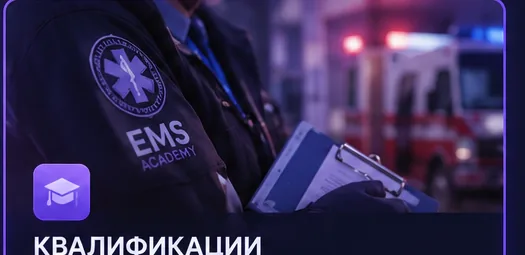
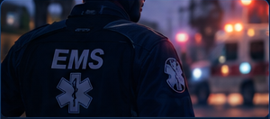
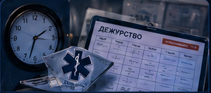

PSIDДОСТУПЕН
Тест на квалификацию мед. справок и вакцинации
Проверка знаний по медицинским справкам, вакцинации и внутренним регламентам отдела PSID.
Нужно проходить с инструктором
Выбрать тест →
Выберите квалификационный тест отдела, ознакомьтесь с правилами и приступайте к проверке знаний.
Выберите нужный отдел, затем начните тестирование.
Проверка знаний по медицинским справкам, вакцинации и внутренним регламентам отдела PSID.
Базовая квалификационная проверка: интернатура, препараты, дефибриллятор и квалификации EMS.
Проверка сотрудников HAD по внутренним требованиям EMS и действующему порядку работы.
Проверка знания Устава EMS: обязанности, рабочие ситуации, дисциплина и основные правила работы.
Материалы и полезная информация для сотрудников EMS.

02 • РАЗВИТИЕЕдиный учебный материал по квалификации. Сначала — вакцинация, затем — выдача медицинских справок.
Вакцинация проводится в отведённых для этого местах.


Для квалификации важно знать соответствие медицинского препарата заболеванию.


Если у пациента ранее не было медицинской справки, проводится полная проверка физического и психологического здоровья.
Попросите пациента снять очки и освободить глаза для проверки.
«Снимите, пожалуйста, очки, сейчас проверим ваше зрение.»
Поставьте пациента напротив таблицы с буквами.
«Я буду Вам показывать буквы, а вы будете читать.»
Проверка левого глаза: попросите закрыть правый глаз.
«Закройте, пожалуйста, правый глаз.»
«Читайте буквы.»
Проверка правого глаза: попросите открыть правый и закрыть левый глаз.
«Закройте, пожалуйста, левый глаз.»
«Читайте буквы.»
Если пациент испытывает трудности с чтением, зафиксируйте информацию о снижении зрения или необходимости очков.
«Снимите, пожалуйста верхнюю одежду и обувь. Ложитесь на кушетку на спину. Сейчас я вам буду делать кардиограмму и рентген, не волнуйтесь, дышите в обычном темпе.»
Порядок ЭКГ и рентгена перенесён из исходной лекции.
После физического обследования попросите пациента присесть и объясните, что сейчас будут заданы несколько вопросов.
«Присаживайтесь на стул. Задам вам несколько вопросов.»
Обязательно задайте следующие вопросы:
При необходимости задайте дополнительные вопросы на адекватность пациента.
«Сейчас покажу вам картинку, а вы скажите, на что похоже пятно.»
Если пациент видит животное или другое изображение, ответ считается корректным и сам по себе не является причиной для отказа в медицинской справке.
Если в биндере имеются дополнительные листочки с изображениями, их следует отыгрывать по очереди.
Озвучить необходимые пометки, заполнить документы и выдать соответствующие медицинские справки.

Если у пациента ранее уже была медицинская справка, сначала уточните:
«Возникали ли у вас какие-либо проблемы со здоровьем с момента получения предыдущей справки?»
Собрали все нужные материалы в одном месте. Выбирай тему и изучай по шагам.
Базовые знания перед началом работы в EMS.
Открыть материал →
02
03Тайминг, скрины и обязательные требования.
Открыть памятку →Подготовка, вызов, безопасность и завершение работы.
Открыть памятку →Где брать, кому выдавать и какие скрины делать.
Открыть памятку →Правильные фото для таблеток, дежурств, ПМП и медкарт.
Открыть памятку →Путь от Government до получения удостоверения.
Открыть инструкцию →Где назначить клавишу и как не выключить камеру случайно.
Открыть инструкцию →Базовые знания, необходимые сотруднику EMS перед началом работы.
Права сотрудника на получение медикаментов и оборудования зависят от его ранга и полученных квалификаций.
На прохождение интернатуры отводится 120 часов. За этот период сотрудник проходит этапы с 1-го по 4-й ранг.
Главный врач и заместители Главного врача.
Заведующие отделениями, заместители заведующих отделениями и ассистенты Главного врача.
Сотрудники 4–10 порядковых рангов.
Сотрудники 1–3 порядковых рангов.
Основная задача — надзорная деятельность за сотрудниками EMS.
1 заведующий отделением и 3 заместителя заведующего отделением.
В EMS предусмотрено 6 квалификаций:
Во время интернатуры сотрудникам разрешено выдавать кодеиновые таблетки в пригородных больницах.
Для выдачи используются два варианта:
Для оказания первой медицинской помощи сотруднику необходим дефибриллятор.
Следовательно, наличие эпинефрина само по себе не позволяет оказывать ПМП без дефибриллятора.
Эпинефрин доступен сотрудникам с 3-го ранга. Максимальное количество — 25 шт.
Проверь знания в уже существующем тесте по вводной лекции.
Памятка по оформлению дежурства и требованиям к фото-карточкам.

Соблюдай тайминг, делай правильные фото и обязательно фиксируй начало, продолжение и окончание дежурства во фракционной рации.
Примеры оформлены в том же порядке, что и в вашем отчёте.


Пошаговая памятка по подготовке, выезду и завершению вызова.
После повышения до Фельдшера (3-й ранг) нужно получить дефибриллятор через заявку в канале запроса. Серийный номер закреплён за сотрудником. Передавать, продавать, выбрасывать или выкладывать дефибриллятор запрещено. При увольнении его нужно сдать.
Для ПМП необходимы дефибриллятор и эпинефрины (до 25 шт.). Оказывать ПМП без дефибриллятора строго запрещено.


Открываем планшет → Emergency Medical Services → Доставка транспорта. Доступность транспорта зависит от ранга: Novak и Landstalker — с 3; Scout — с 5; Buzzard — с 9 при наличии лицензии и SAR; Speedo II — с 9; Neon и Ambulance — с 11.

Открываем вкладку вызовов и включаем «В патруле». Фильтр причин вызова можно настроить под себя.

На планшете выбери вызов и нажми «Принять вызов», либо используй уведомление: Y — принять, H — скрыть.


После прибытия убедись: нет активной перестрелки, ты не в зоне дропа/тайников/каптов и твоей жизни никто не угрожает. После этого наведиcь на игрока → G → Реанимировать.

Нажимай «Пробел», когда индикатор находится в зелёной зоне. Успешные нажатия заполняют прогресс, ошибки — шкалу ошибок.

После успешной реанимации сделай скрин: боди-камера включена и внизу есть уведомление о реанимации.

Вызов можно отменить через планшет, если он находится в зоне активной перестрелки, на Кайо-Перико или во время мероприятий. Нажми «Отклонить вызов» и укажи причину.
На выезды ПМП разрешено выезжать максимум вдвоём. Исключение — обучение интернов.
Выдача таблеток во время интернатуры.
Максимум — 72 шт., из ящика берётся сразу 24 шт.. С 3-го ранга доступны наборы.


Во время интернатуры таблетки разрешено выдавать только в пригородных больницах: Sandy Shores — коридор рядом с палатами; Paleto Bay — холл больницы.

G → Фракционное → Продать таблетку / Вылечить игрока. «Продать таблетку» — обычному гражданину. «Вылечить игрока» — государственному сотруднику, если он предъявил удостоверение.

Примеры правильных фото для основных действий интернатуры.


Путь до Government и получение удостоверения.


Настрой клавишу один раз и больше не ищи настройку.
F2 → Настройки → Назначение клавиш → Боди камера.
Лучше назначить отдельную клавишу, которую ты обычно не используешь, чтобы случайно не выключить камеру.

Введите игровое имя, фамилию и Static ID. После подтверждения выбранный тест начнётся автоматически.